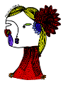
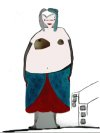
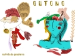
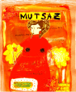

MutSaz é uma publicação trimestral, colaborativa e improvisada criativamente do MutGamb [1] (Mutirão da Gambiarra), núcleo editoral que nasceu na MetaReciclagem [2].
---
 Pozimi - Inverno 2011
Pozimi - Inverno 2011
leia mais sobre esta edição [3]

Wiqua - Outono 2011
leia mais sobre esta edição [4]
Janxs - Verão 2011
leia mais sobre esta edição [5]

Reva - Primavera 2010
leia mais sobre esta edição [6]

Pozimi - Inverno 2010
baixe em diferentes versões: a4, a5, e-book ou telacheia. [7]
leia mais sobre esta edição [8]

Dopre - Outono 2010
baixe aqui o pdf [9] e leia mais sobre esta edição [10]

Verão 2010
baixe aqui o pdf [11] e leia mais sobre esta edição [12]
Primavera 2009
leia mais sobre esta edição [13]
____
Confira os posts com a tag #mutsaz [14].